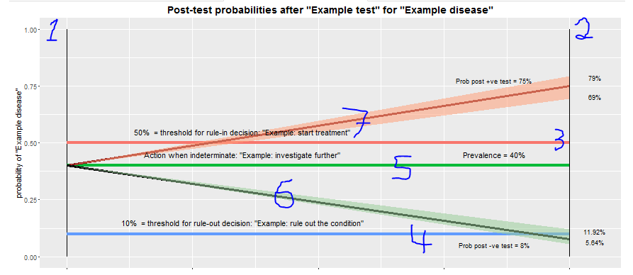

Graph 2 shows how decisions are made with information from a diagnostic test. The clinical utility of the test is the net benefit to patients, and is determined by the outcomes which follow from the management decisions made on the basis of the test's results. Thus, the first step to assessing clinical utility is to understand the factors that determine decision-making.
|  Figure. Screensnip of Graph 2. |
You may have noticied that there are not one, but two Y-axes!
Did you notice that there is no X-axis!
(This is why there is no scale and no line number keyed for the X-axis)
Although the graph might seem to be a normal X-Y plot, what looks like an X-axis is a visual metaphor showing how test results move from pre-test probability on the left to post-test probability on the right.
Change the specificity
and prevalence
settings on the left.
How does the
post-positive test probability (i.e. positive predictive value, PPV)
change?
Is it above or below the decision
threshhold?
At what specificity and prevalence would there be no point in doing the
test to rule in a condition?
Change
the population size.
How does the precision (95% confidence interval)
change?
(The 95% CI is the salmon pink ribbon around the
post-positive test
line, and the sea green ribbon around the post-negative test
line.)
What is the implication for decision making when the
confidence interval includes the decision threshold?
Change the sensitivity
and prevalence
settings on the left.
How does the
post-negative test probability (i.e. negative predictive value, (1 -
NPV)) change?
Is it above or below the decision
threshhold?
At what sensitivity and prevalence would there be no point in doing the
test to rule out a condition?
Change
the population size.
How does the precision (95% confidence interval)
change?
(The 95% CI is the salmon pink ribbon around the
post-positive test
line, and the sea green ribbon around the post-negative test
line.
What is the implication for decision making when the
confidence interval includes the decision threshold?
Data for your condition's prevalence and the test's accuracy (sensitivity and specificity) will be in the scientific literature, unless the test is under development, in which case unpublished data from the developer may be available.Use data from a (well conducted and well reported) systematic review and meta-analysis, if this is available. Otherwise, use data from a (well conducted and well reported) study. Data for the population size should be available from the the source of your accuracy data.
Obtaining reliable data for the decision thresholds can be a challenge. But it is a challenge worth rising to, as the decision thresholds determine the clinical utility of the test.
Health economists do the kind of studies that determine the decision threshold that provide the optimum cost for net benefit --- net benefit takes account of benefits and the harms. Costs, benefits, and harms are those that follow from doing the test and acting on its result.
In technical terms, the recipe that the health economists folllow is:
Because this type of health economic study is difficult and expensive, clinicians often have to use intuition and gut feeling to decide on decision thresholds.
Informal setting of decision thresholds can be biased, either by over-emphasising the benefits in comparison with the harms, or vice versa.
For more information on thresholds for decision making with diagnostic tests and the health economic evaluation of diagnostic tests, see: